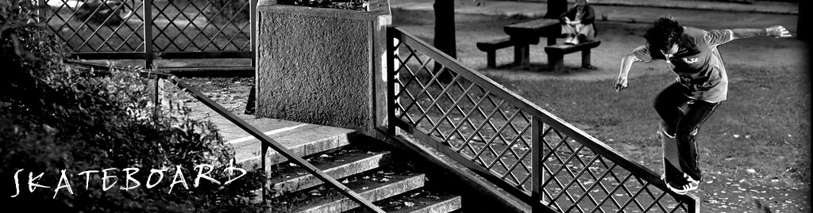

|  |
20世纪50年代末60年代初由冲浪运动演变而成的滑板运动，在而今已成为地球上最“酷”的运动。滑板的技巧主要包括：The AerialL（在滑杆上）、The Invert（在U台上）、The Ollie（带板起跳），这些技术可说是除了翻板之外最重要的滑板动作。世界上两个重要的滑板国际组织：国际滑板商协会（全称：INTERNATIONAL ASSOCIATION OF SKATEBOARD COMPANIES 简称：IASC）以及世界杯滑板赛（全称：WORLD CUP SKATEBOARDING 简称：WCS）。已成为地球上最“酷”的运动。滑板的技巧主要包括：The AerialL（在滑杆上）、The Invert（在U台上）、The Ollie（带板起跳），这些技术可说是除了翻板之外最重要的滑板动作。 世界上两个重要的滑板国际组织：国际滑板商协会（全称：INTERNATIONAL ASSOCIATION OF SKATEBOARD COMPANIES 简称：IASC）以及世界杯滑板赛（全称：WORLD CUP SKATEBOARDING 简称：WCS）。 滑板运动以滑行为特色，崇尚自由的运动方式，体验与创造超重力的感受，给滑者带来成功和创造的喜悦。滑板运动不同于传统运动项目，不拘泥于固定的模式，需要滑手自由发挥想象力，在运动过程中创造，以创造力来运动，强调身心的自由，推崇与自然互相融合的运动理念。滑板运动富有超越身心极限的自我挑战性、观赏刺激性、高科技渗透性。 人在运动中完善人性，回归自然的本质重新被充分强调，在繁华都市潜藏着一股回归自然、融于自然、挑战自我，运致天人合一思想境界的清流极限运动特色。在欧美各国及各发展中国家，参加极限运动已经成为都市青年最流行、最持久的时尚，参加极限运动会已经成为广大都市青年梦寐以求的愿望。 |
| 《回首页 | 下一个》 |